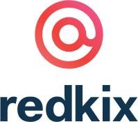

Brands I've Worked With
Alltogether I have been fortunate enough to work with some amazing brands including:


While working for St. Jude Children's Hospital I had the opportunity to be apart of some amazing projects. One of my most notable accomplishments was leading a team in improving the online marathon results experience. With roughly 6 weeks before race day we successfully designed, developed and launched the new experience.
In 2018 I worked as a contractor to help rebrand Pearson Education's "Pulse Portal" for mobile and web. The most rewarding aspect of this project was supporting over 8 different languages within a single interface. The application is invite only based on school district but a preview can be found in the Android Marketplace.
In 2016 I worked alongside Victor Erixon and the marketing team at Redkix to develop their entire digital marketing. This work included a custom website, email templates, and a brand style guide. Redkix has since been purchased by Facebook and converted into what is now known as Workplace.
Alltogether I have been fortunate enough to work with some amazing brands including: